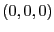
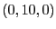

The graphics operation word format was inspired by a motion description language8.
If there were more time available, a NIOS II CPU would have been implemented in order to parse the input and write the opwords to the graphics unit.
The hardware would handle the rest and display the result on VGA.
The commands that would be immediately relevant in this circuit are described below:
- square [dx dy dz [sx sy sz]] - Without the optional arguments denoted in square brackets, a square of unit size would be placed at the origin.
(dx, dy, dz) denotes the center of the square in the global coordinate frame.
(sx, sy, sz) denotes the scale of each dimension of the square, so any rectangular prism can be actuated.
- circle [dx dy dz [sx sy]] - Similar to the square command, circle would generate a two-dimensional circle at the specified origin and scale, so ellipses can be realized.
- vary knobname v0 v1 f0 f1 - This command will vary any variable with same name as knobname in linear steps starting from frame number f0 to frame number f1 between values v0 and v1.
With proper support in the parser, the square and circle commands can be represented using knob values.
For example, the hardware already has preliminary support for parametric values for any graphical transformation, so a command list such as square 0 k1 0 and vary k1 0 10 0 10 will display a square whose center moves from 
to

in 10 frames.
Many more scripting commands can be incorporated, including, but not limited to: specifying coordinate systems whose displacement (dx, dy, dz) is relative to that coordinate system; specifying a camera angle, which can also be controlled by knobs; and generating even more shapes, such as a sphere or torus with adjustable minor and major radii.
2007-12-02